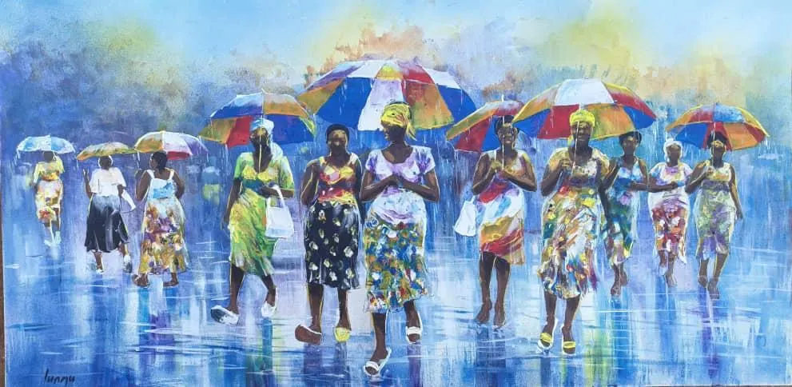

Direct
Works are purchased fairly from artists in Zimbabwe.

Art from Zimbabwe
Sculptures and paintings connect us with artists in Zimbabwe. Their work tells stories of family, everyday life and hope, offering a personal way to discover the country's culture.
Art and encounters
Our connection with art has grown over many years. Stone sculptures and contemporary paintings reveal the expressive power of Zimbabwean artists, offering a perspective that goes beyond project figures.
For many years, the foundation has bought directly from artists in Zimbabwe. Selling their work can support our projects, but personal connection remains central: these works make family, hope, vulnerability and dignity visible.
Gallery
Discover stone sculptures and paintings from Zimbabwe. Please get in touch if you would like to know more about a work.





Art bridges distances without erasing differences.
Encountering art introduces us to other perspectives. An interest in a work can spark conversations and connections that reach across borders.

Places of art
Harare, Chitungwiza and Tengenenge are places of artistic encounter. Here, sculptures and paintings express personal experiences and life in Zimbabwe in many different ways.
Works are purchased fairly from artists in Zimbabwe.
Meeting the artists creates a personal connection with their work.
Art sales support the foundation's work.